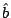
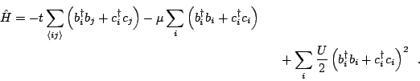
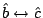
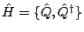

A superstring in high-energy theory is a 1+1 dimensional object embedded in ten dimensions, with a fermionic field living on the string. The fermionic field has the same relativistic spectrum as the bosonic transverse oscillation modes of the string. The high dimensionality is not required in the non-relativistic limit.
Our proposal uses a quantized vortex in a Bose condensate as the stringy object, in a periodic geometry where the transverse oscillation modes (kelvons) are particle-like (quadratic), and thus can be made supersymmetric with fermionic atoms placed in the vortex core. We worked out the laser parameters required for the supersymmetry of the quadratic fermion-boson Hamiltonian. (Note that in superstring theory, the supersymmetric Lagrangian is quadratic.)
One can also, with an additional laser, tune the kelvon-fermion interactions to the kelvon-kelvon interactions, thus leading to the kelvon(

)-fermion() Hamiltonian:

interchange; but it is not straightforward to define a supersymmetry operator satisfying
. My collaborators are working on this and related issues.